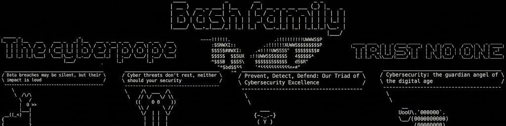
What if learning cybersecurity felt less like reading a technical manual and more like meeting a family of unforgettable characters? 🐧🐘🐢
Meet the Bash Family (#bashfam), my creative cybersecurity content series on LinkedIn, where I combine Bash scripting, terminal-style illustrations, and memorable characters to make cybersecurity concepts more engaging and accessible.
I'm Michael Tchuindjang, cybersecurity thought leader, educator, researcher, and the founder and content creator of Bash Family. My goal is to explore cybersecurity through an unconventional creative format: terminal-style illustrations constructed using dashes, symbols, and the visual language of the command line.
Instead of relying solely on conventional explanations, Bash Family brings personality, humour, and creativity into cybersecurity education. Each character has a distinctive personality, recognisable traits, and a story that makes the series memorable. Together, they form a growing universe connecting creative content with the world of technology.
Meet the Members of the Bash Family 🐾
Every family has its characters, quirks, strengths, and weaknesses. Bash Family is no exception! Meet the members below, discover their personalities, and visit their original LinkedIn posts to explore the series.
1. Guigui Penguin 🐧
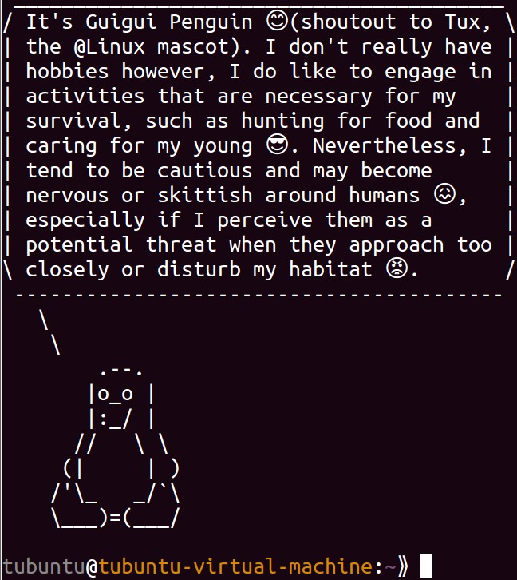
It's Guigui Penguin! 😊 Guigui may not have many conventional hobbies, but survival is a full-time occupation. Hunting for food and caring for the young are essential parts of life. Naturally cautious, Guigui can become nervous around humans, particularly when they approach too closely or disturb the habitat. Get too close, and that adorable penguin might not be so welcoming after all! 😎
Character hashtags: #GuiguiPenguin #BashFam
2. Roro Rooster 🐓
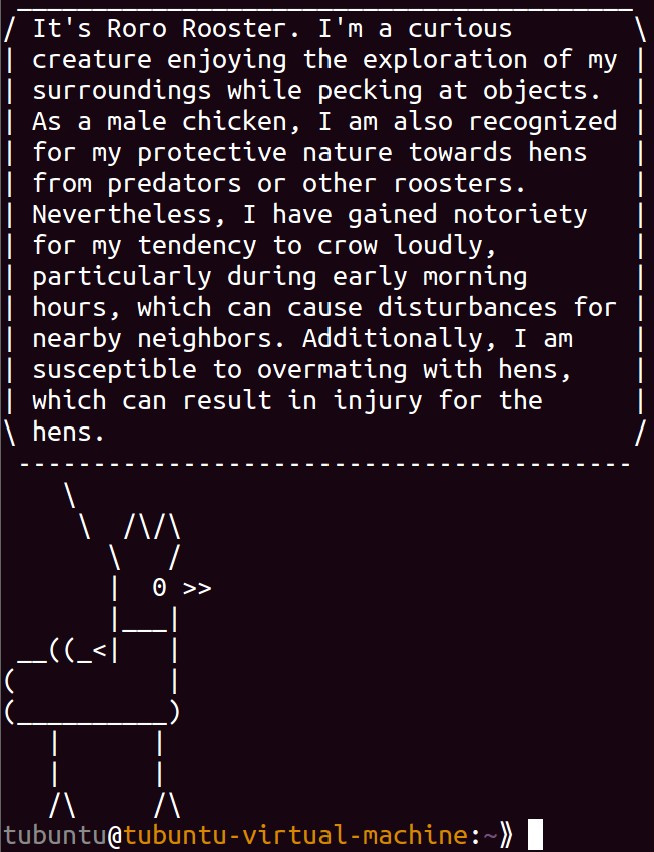
It's Roro Rooster! 🐔 Curious by nature, Roro loves exploring the surroundings and pecking at anything that catches the eye. As a rooster, Roro can also be protective of the hens when predators or rival roosters appear. But there's a catch: Roro is famous for crowing loudly, especially in the early morning, much to the frustration of the neighbours. And an overly enthusiastic mating instinct can cause problems for the hens, too. 🙄
Character hashtags: #RoroRooster #BashFam
3. Lele Elephant 🐘
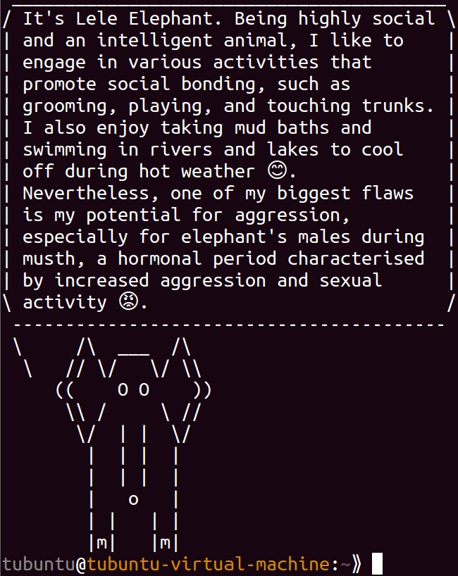
It's Lele Elephant! 🐘 Highly intelligent and social, Lele enjoys bonding with others through grooming, play, and affectionate trunk-touching. Mud baths and swimming in rivers and lakes are also firm favourites, particularly when the weather gets hot. 😊 However, even this gentle giant has a challenging side. Male elephants can become considerably more aggressive during musth, a hormonal period associated with heightened aggression and reproductive activity. Never underestimate the power behind that trunk!
Character hashtags: #LeleElephant #BashFam
4. Popo Pony 🐴
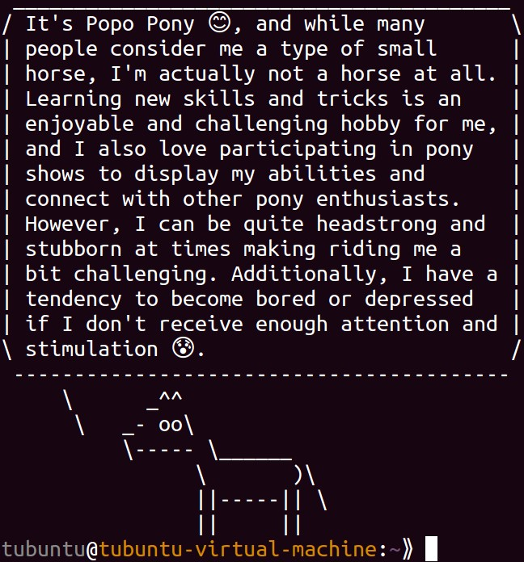
It's Popo Pony! 🐴 Although many people mistake Popo for a small horse, ponies are generally distinguished by their smaller stature and other physical characteristics. Popo enjoys learning new skills, mastering tricks, and showing off at pony events. But this talented character can be headstrong and stubborn, making riding a challenge at times. Without enough attention, exercise, and mental stimulation, Popo can become bored and unhappy. Talent needs engagement!
Character hashtags: #PopoPony #BashFam
5. Shishi Sheep 🐑
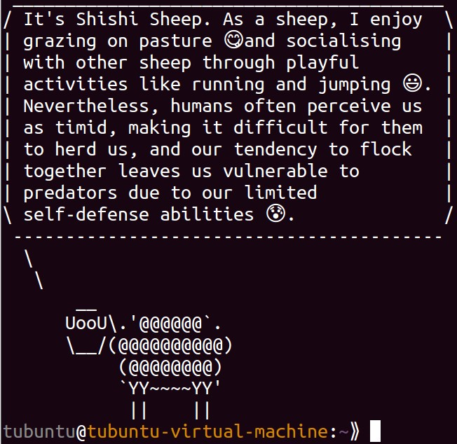
It's Shishi Sheep! 🐑 Shishi loves grazing on green pastures and socialising with fellow sheep through playful activities such as running and jumping. 😃 However, sheep are often perceived as timid, and their strong flocking instincts can leave them vulnerable when predators strike. Sometimes, sticking together is a strength, but it can also become a weakness when the whole group follows the same direction.
Character hashtags: #ShishiSheep #BashFam
6. Koko Koala 🐨
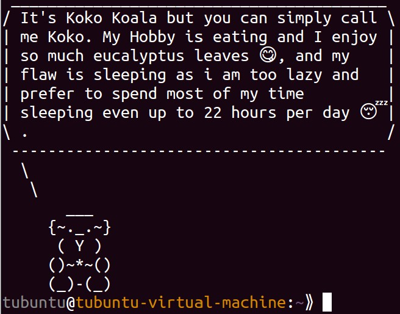
It's Koko Koala, although you can simply call me Koko! 🐨 Koko's favourite pastime is eating eucalyptus leaves. 🌿😋 And when the meal is over? Time for another nap! Koalas can sleep for up to around 20 hours a day, sometimes even longer. With that much sleep on the schedule, finding Koko available for a meeting might be a challenge. Koko reminds us that even the cutest characters have habits that can get in the way.
Character hashtags: #KokoKoala #BashFam
7. Chacha Chameleon 🦎
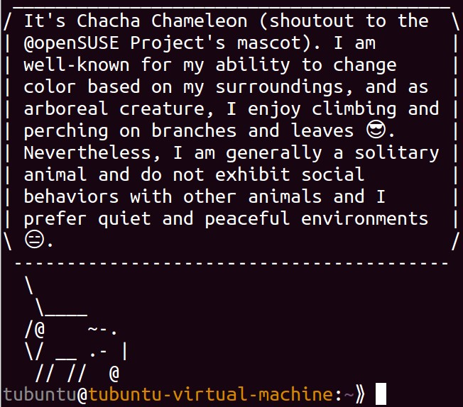
It's Chacha Chameleon! 🦎 Famous for changing colour in response to its surroundings, Chacha is perfectly equipped for life among branches and leaves. As an arboreal creature, climbing and perching are favourite activities. 😎 Yet Chacha also appreciates solitude and generally prefers a quiet environment over constant social interaction. Sometimes, blending in and keeping to yourself is the preferred strategy.
Character hashtags: #ChachaChameleon #BashFam
8. Mimi Milky 🥛
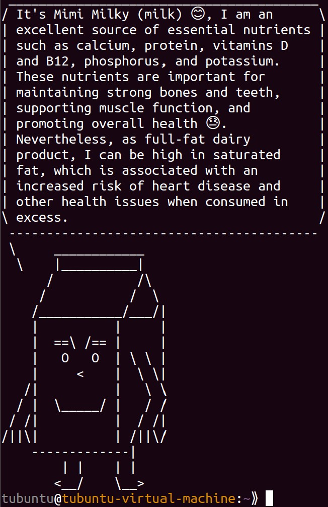
It's Mimi Milky! 🥛 Milk provides important nutrients, including calcium, protein, phosphorus, potassium, and vitamins such as B12. These support various bodily functions, including bone health and muscle function. But Mimi has a nutritional catch: full-fat milk contains saturated fat, and consuming too much saturated fat can contribute to increased cardiovascular risk. Even a useful member of the family comes with a reminder about balance.
Character hashtags: #MimiMilky #BashFam
9. Cece Cheese 🧀
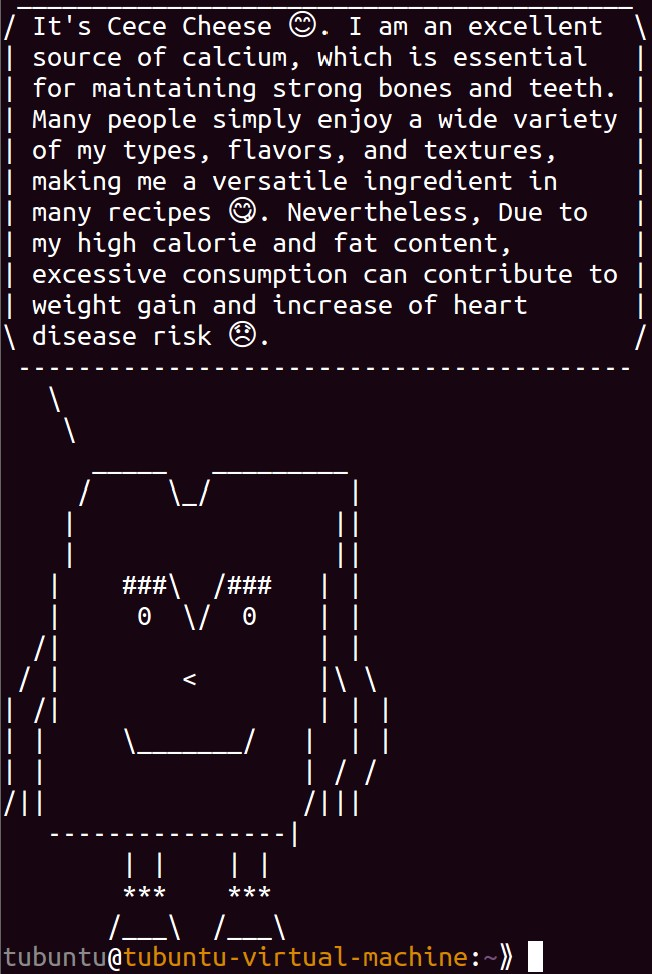
It's Cece Cheese! 🧀 A source of calcium and other nutrients, Cece comes in an impressive variety of types, flavours, and textures. From a simple snack to a key ingredient in countless recipes, cheese is incredibly versatile. 😋 However, some cheeses are high in calories, saturated fat, and salt. Excessive consumption can contribute to health risks, so enjoying Cece in moderation is the sensible approach.
Character hashtags: #CeceCheese #BashFam
10. Bubu Bunny 🐇
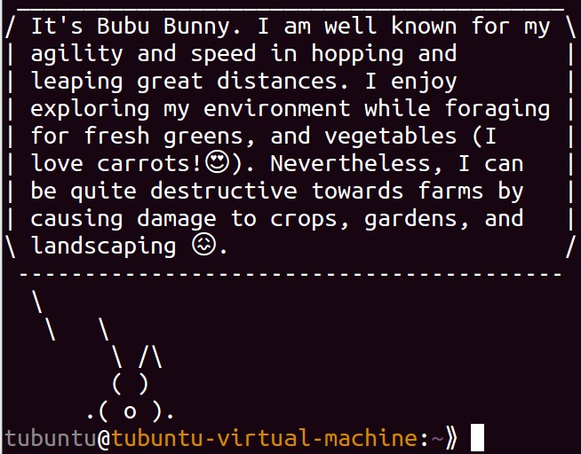
It's Bubu Bunny! 🐇 Known for agility and impressive hopping abilities, Bubu enjoys exploring the environment and foraging for fresh greens. Carrots are a particular favourite! 🥕😍 But Bubu's curiosity can cause problems for farmers and gardeners, as rabbits can damage crops, flower beds, and landscaping. Cute, quick, and occasionally destructive, Bubu is a reminder that every strength can have a downside.
Character hashtags: #BubuBunny #BashFam
11. Willee Wildebeest 🐂
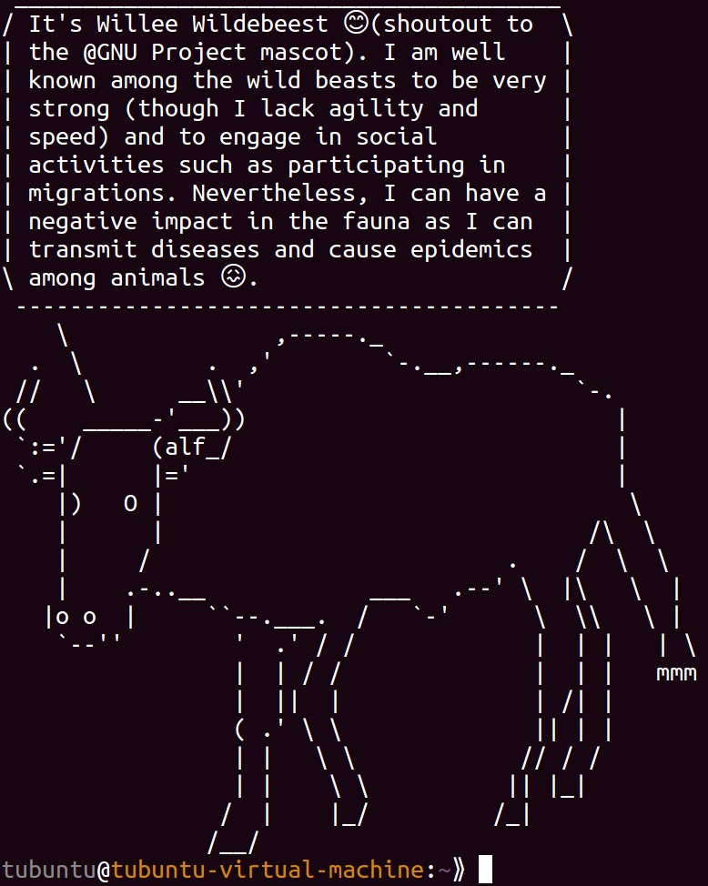
It's Willee Wildebeest! 💪🏾 A powerful character with a strong connection to the animal world's social life, Willee is associated with the large migrations that bring wildebeest together in enormous herds. Although strong, wildebeest are not built for every kind of rapid manoeuvre. They can also carry parasites and pathogens that affect other animals. Willee reminds us that strength and numbers do not eliminate every vulnerability.
Character hashtags: #WilleeWildebeest #BashFam
12. Keke Turkey 🦃
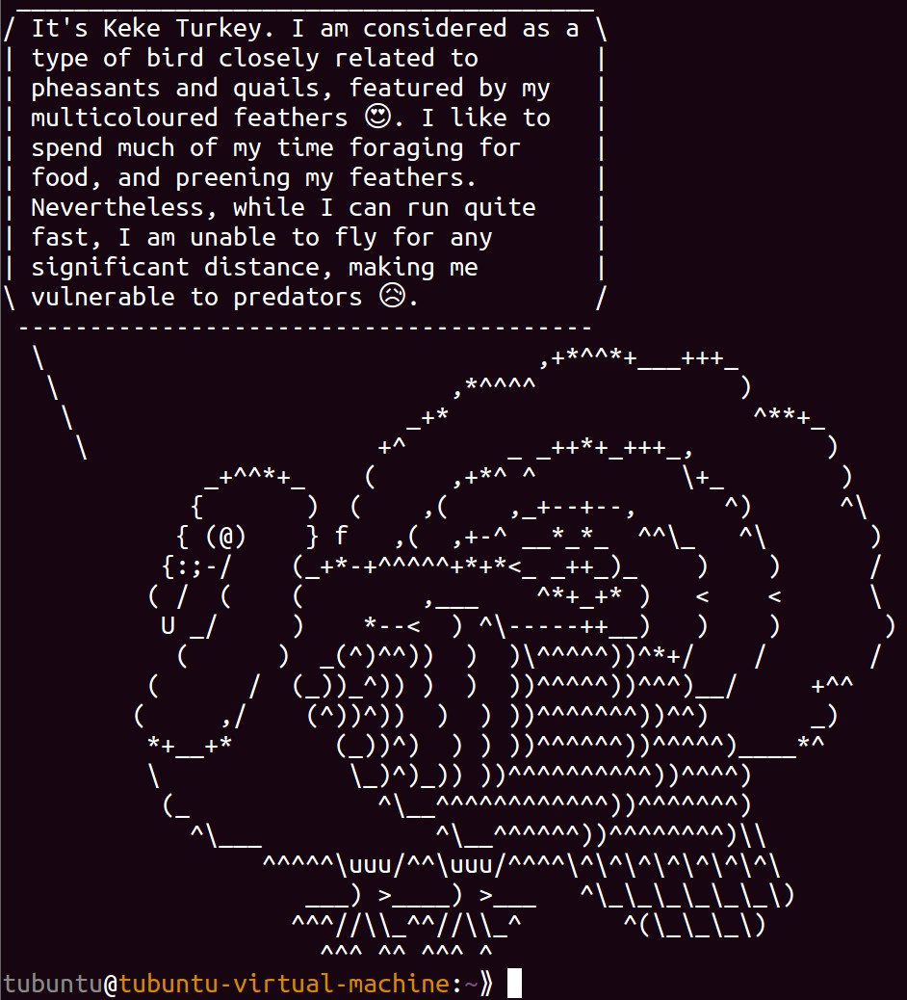
It's Keke Turkey! 🦃 With colourful feathers and a close evolutionary relationship to pheasants and quails, Keke certainly knows how to stand out. Much of the day is spent foraging for food and maintaining those impressive feathers. Keke can run surprisingly fast, but cannot sustain long-distance flight like many other birds. A good reminder that looking impressive does not mean being equipped for every situation.
Character hashtags: #KekeTurkey #BashFam
13. Stimpy 🐱
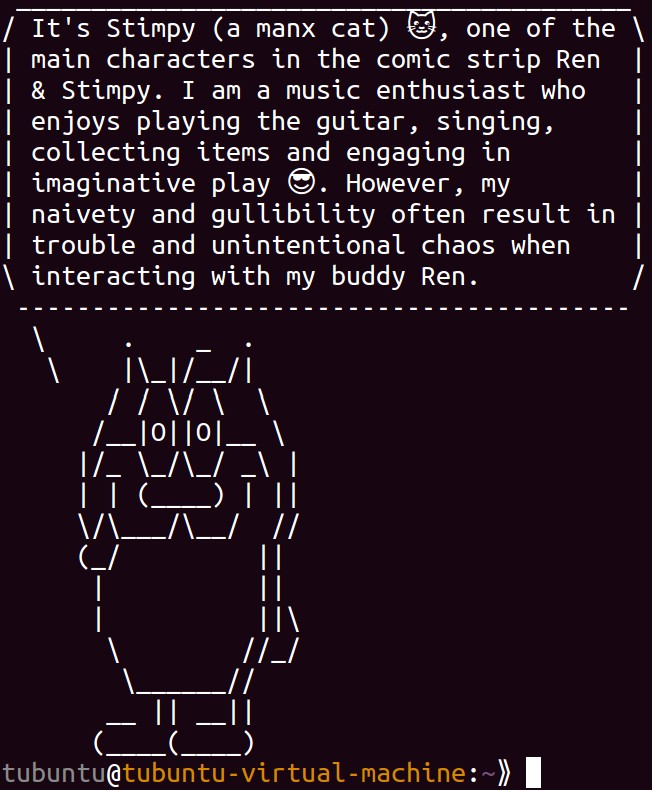
It's Stimpy! 🐱 One of the main characters from the comic strip and animated series Ren & Stimpy, Stimpy is a music enthusiast who enjoys playing the guitar, singing, collecting things, and indulging in imaginative play. 😎 Unfortunately, Stimpy's innocence and gullibility can lead to trouble, especially when interacting with his unpredictable companion, Ren. A trusting personality can be wonderful, but it can also create opportunities for mischief.
Character hashtags: #Stimpy #BashFam
14. Dede Daemon 😈
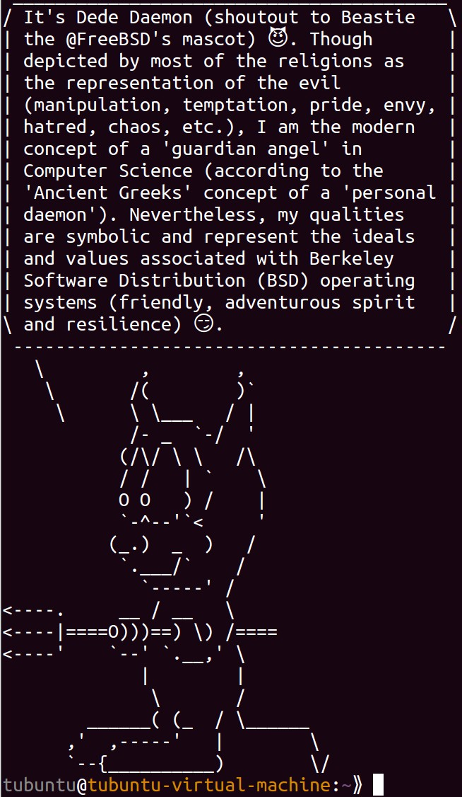
It's Dede Daemon! 😈 The name might sound intimidating, but in computing, a daemon is a background process that performs tasks without requiring direct interaction from the user. Dede pays tribute to the traditional BSD daemon imagery and the spirit of Beastie, the FreeBSD mascot. Far from simply representing evil, Dede embodies a more playful identity associated with BSD culture: friendliness, adventure, and resilience. 😏
Character hashtags: #DedeDaemon #BashFam
15. Fefe Feline 🐅
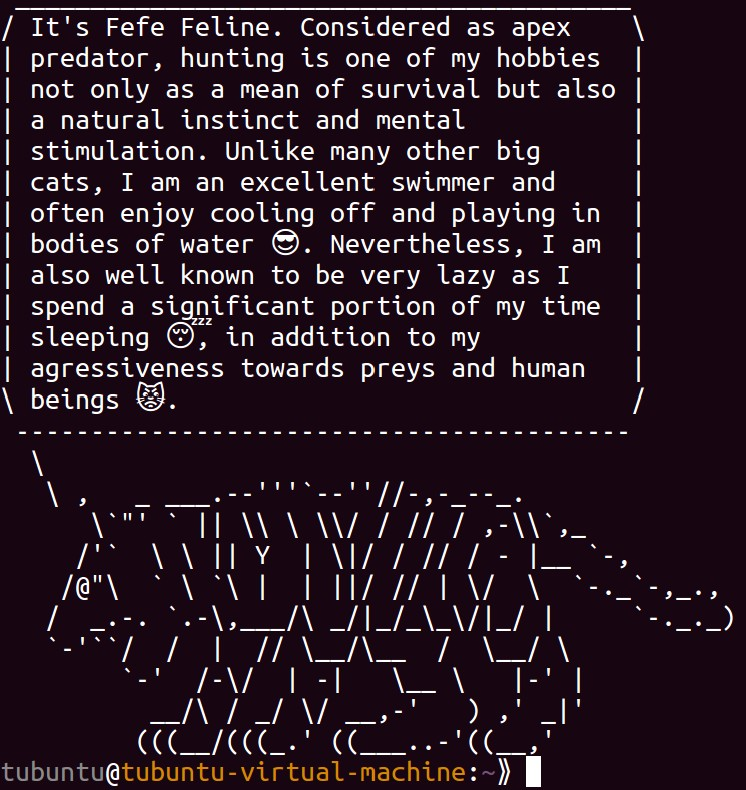
It's Fefe Feline! 🐅 As an apex predator, Fefe enjoys hunting, both as a means of survival and as a natural source of stimulation. Unlike many domestic cats, big cats such as tigers are also capable swimmers and can enjoy spending time in water. 😎 Yet even a powerful predator needs downtime. Fefe spends plenty of time sleeping and can be aggressive when threatened or hunting prey. Best admired from a safe distance!
Character hashtags: #FefeFeline #BashFam
16. Tutu Turtle 🐢
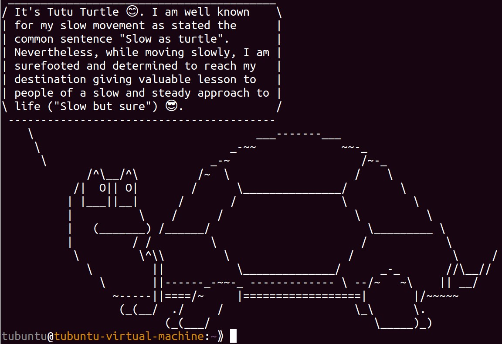
It's Tutu Turtle! 🐢 Famous for moving at a relaxed pace, Tutu might not win every race. But slow movement does not mean a lack of determination. Tutu keeps moving steadily towards the destination, demonstrating the value of patience and persistence. 😎 In a world obsessed with speed and instant results, Tutu has a timeless lesson: progress is still progress, even when it happens one small step at a time.
Character hashtags: #TutuTurtle #BashFam
17. Coocoo Cow 🐄
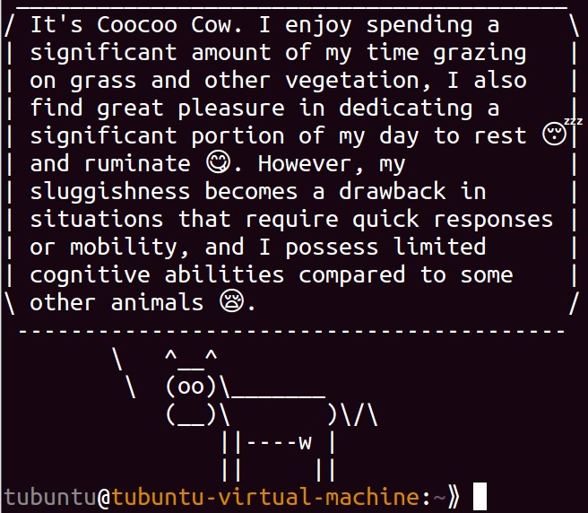
It's Coocoo Cow! 🐄 Coocoo enjoys grazing on grass and other vegetation, resting, and ruminating after a satisfying meal. 😋 However, Coocoo's relaxed lifestyle can become a disadvantage when a situation demands a rapid response. Cows have evolved to thrive in their ecological niche, even if they are not built for every kind of challenge. Sometimes, the right strengths depend entirely on the situation.
Character hashtags: #CoocooCow #BashFam
18. Calvin 👦
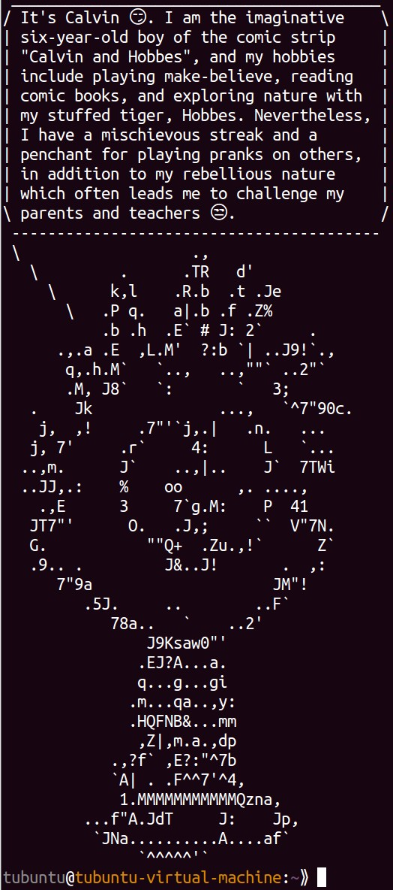
It's Calvin! 😏 The imaginative six-year-old from Calvin and Hobbes loves make-believe, comic books, outdoor adventures, and spending time with his stuffed tiger, Hobbes. His creativity is boundless, but so is his talent for pranks. Calvin is famously rebellious, frequently challenging his parents and teachers and testing the limits of their patience. Curiosity can spark wonderful ideas, but a little mischief often comes along for the ride.
Character hashtags: #Calvin #BashFam
19. Kiki Kitty 🐈
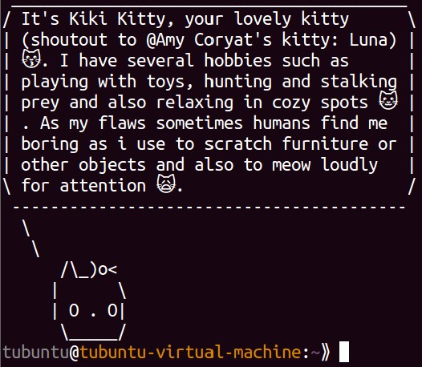
It's Kiki Kitty, your lovely kitty! 😽 With a shout-out to Luna, Amy Coryat's cat, Kiki enjoys playing with toys, stalking imaginary prey, and finding the cosiest places for a well-earned rest. But this little feline has a few habits that might test anyone's patience. Scratched furniture and loud meows for attention are just part of the package. If Kiki wants your attention, you'll probably know about it! 🙀
Character hashtags: #KikiKitty #BashFam
20. Momo Moose
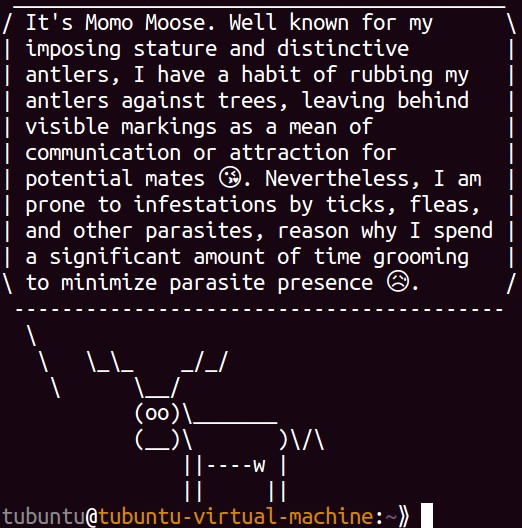
It's Momo Moose! 💪🏾 Known for an imposing stature and distinctive antlers, Momo certainly makes an impression. Moose may rub their antlers against trees and vegetation, leaving visible marks in their environment. However, these large animals can also host ticks, fleas, and other parasites. Grooming and other behaviours can help reduce parasite burdens, although they cannot eliminate every risk. Even a giant needs to watch out for the little things!
Character hashtags: #MomoMoose #BashFam
21. Dudu Duck 🦆
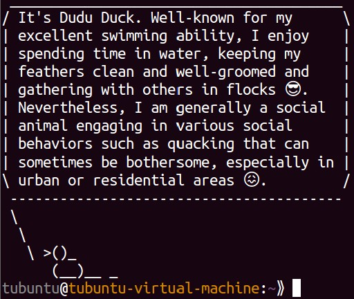
It's Dudu Duck! 🦆 Dudu loves swimming, spending time in the water, keeping those feathers clean, and gathering with fellow ducks. 😎 Social interaction is a big part of duck life, but all that quacking can become rather noisy, particularly in residential areas. Dudu proves that being sociable is wonderful, although knowing when to quieten down is also a useful skill.
Character hashtags: #DuduDuck #BashFam
22. Toto Toad 🐸
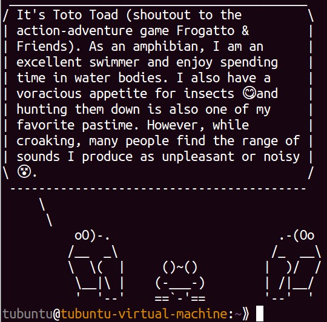
It's Toto Toad! 🐸 With a shout-out to the action-adventure game Frogatto & Friends, Toto represents the fascinating world of amphibians. Toads enjoy hunting insects and other small prey, making them useful members of many ecosystems. 😋 But Toto has a noisy side. Depending on the species and situation, amphibian calls can become surprisingly loud, especially during breeding season. Nature's soundtrack is not always everyone's favourite!
Character hashtags: #TotoToad #BashFam
23. Ren Höek 🐕
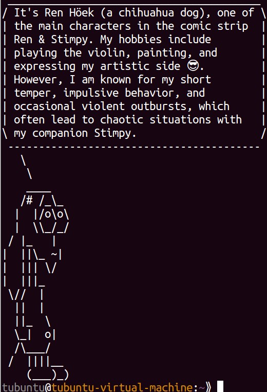
It's Ren Höek! 😎 The Chihuahua from Ren & Stimpy enjoys artistic pursuits such as playing the violin and painting. However, Ren's creativity comes with a volatile personality. A short temper, impulsive decisions, and occasional explosive outbursts frequently create chaotic situations, particularly when Stimpy is around. Put Ren and Stimpy together, and peace and quiet are never guaranteed!
Character hashtags: #RenHoek #BashFam
Why Bash Family? 💻
Cybersecurity is a complex and constantly evolving discipline. Making its concepts understandable to different audiences requires more than technical expertise alone. It also requires creativity, communication, and the ability to make ideas memorable.
Bash Family is my way of bringing those elements together. By combining terminal-inspired illustrations with distinctive characters, I aim to make cybersecurity content more approachable while celebrating the creativity of the command line.
The series also reflects a broader belief: cybersecurity education does not always have to look conventional. Technical subjects can be explored through storytelling, humour, visual creativity, and experimentation without losing their connection to technology.
Cybersecurity education can be technical without being boring, creative without losing its purpose, and memorable without sacrificing the message.
Michael Tchuindjang, Founder and Content Creator of Bash Family
Join the Bash Family on LinkedIn!
From Guigui Penguin to Ren Höek, every character brings something different to the family. Some are curious, some are stubborn, some are sleepy, and others are simply impossible to ignore. Together, they make up a creative universe that connects my passion for cybersecurity with my love of unconventional content creation.
Which Bash Family character is your favourite, and which one should join the family next?
Explore the individual LinkedIn posts, share your favourite character, and join the conversation using the character's hashtag alongside #BashFam. Follow my cybersecurity content on LinkedIn to discover more creative ways of exploring the digital world.
If you enjoy cybersecurity explained differently, you're in the right place. Welcome to the Bash Family!
Making cybersecurity memorable, one character and one command-line-inspired illustration at a time.
Michael Tchuindjang
Founder and Content Creator of Bash Family | Cybersecurity Thought Leader,
Educator and Researcher